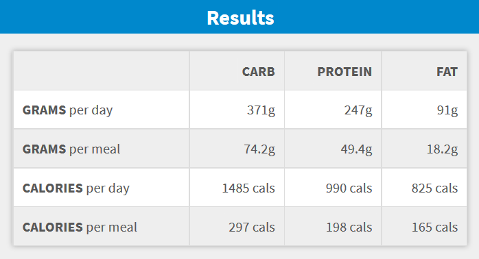

Welcome to the UCWPGRSRGM, this is a once in a lifetime opportunity for you to achieve the bodytype of your dreams!
I'm going to make it short and sweet, but most importantly - cut all the bullshit, and get to the point. A lot of people think they are able to obtain their ideal bodytype (ripped/shredded of course) through doing lots of excersice alone. Although there is a lot more to it than that.
What you are able to achieve through excercise will be limited if neglect proper dieting. Your diet is key when it comes to working out, and will likely be what determines the outcome/results. It is asumed that dieting makes up 70% of the work, meanwhile the actual training/excercising is only 30%. There is a specific ammount of calories that your body needs in order to maintain bodyweight. This can be calculated using any calorie calculator online. Dieting is actually very simple. If you eat more than the calculated calorie you need to maintain bodyweight, than you will gain muscleweight (if excercising). Theoretically +500 kcal = +0.5 kg pr. week. So if your goal is to gain weight than try to add a meal (500-700 kcal), and if you're weight still isnt increasing than add some more until you see your weight going up (Nice goal: +1.7 kg pr. month). Using the nutrient calculator i sugest going for 5 meals.
Now you know the ammount of calories you need to eat before gaining weight, but how can you make sure you get them? An easy way to do this is through mealprepping and tracking your kcal intake through out the day. I'm not saying you have to start measuring lettuce leaves whenever you want to make a fucking sandwitch, because that would ruin your consistency. Instead you should download a calorie tracker on your phone, that will help you reach you kcal goal throughout the day. A calorie-tracker that i can recomment is called Lifesum. Try and use it for just a month or two, so that you have an idea of how much you need to eat. You can get it on the Appstore og Google Play:
But even though you might be getting the correct ammount of calories you should also pay attention to macronutrients. Again, use the calculator above or the calorie-tracker to make sure you are getting the right ammount of each macronutrient. There are 3 macronutrients which you can see in the table bellow:
| Macronutrient | Calories/gram | Kilojoules/gram | Foods |
|---|---|---|---|
| Protein | 4 kcal/g | 17 kJ/g | Lean meats (beef, lamb, pork, etc.), poultry (chicken, turkey, duck, etc.), fish/seafoods, dairy products (especially greek youghurt), nuts (almonds, walnuts, deez nuts, etc.), eggs, beans, protein supplements |
| Carbohydrates | 4 kcal/g | 17 kJ/g | minimally processed whole grains, vegables, fruits and beans, rye bread |
| Fats | 9 kcal/g | 37 kJ/g | avocado, cheese, dark chocolate, eggs, fatty fish, nuts |
Just as an example i have calculated the ammount of different macronutrients i need throughout my day (with the macronutrient calculator above):
